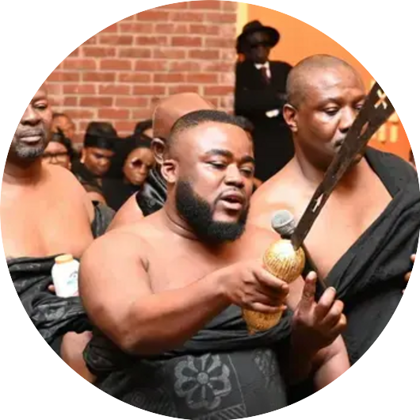
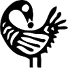

About the Asanteman Association.
A Ghanaian cultural and social organization uniting the Asante community and friends of Ghana across the Midwest region of the United States.

A hub for Asante heritage in the diaspora.
The Asanteman Association of Chicago & Midwest (AACM) is a vibrant Ghanaian cultural and social organization dedicated to uniting the Asante community and friends of Ghana across the Midwest region of the United States.
Founded to promote Asante heritage, traditions, and values, AACM serves as a hub for cultural education, community service, and networking among Ghanaians living in Chicago and neighboring states.
Our mission is to preserve the rich culture of the Asante Kingdom, foster unity among members, and support the well-being of the Ghanaian community in the diaspora. Through cultural events, educational programs, and charitable initiatives, the Asanteman Association brings people together to celebrate identity, build connections, and give back both locally and internationally.
Four pillars of our work.

Cultural Preservation
Sankofa — go back and fetch itShowcasing Asante customs, festivals, music, and traditions in Chicago and the Midwest.
Community Support
Denkyem — adaptabilityOffering guidance and resources to Ghanaians and immigrants adjusting to life in the United States.

Charity & Outreach
Bese Saka — abundance & togethernessSupporting social and humanitarian projects in both Ghana and local Midwest communities.

Networking & Education
Adinkrahene — leadershipCreating opportunities for members to connect, learn, and grow professionally and socially.
Together, we make a greater difference.
Membership in the Asanteman Association of Chicago & Midwest provides an opportunity to connect with fellow Ghanaians, celebrate your heritage, and contribute to the growth of a strong, supportive community.
Whether you were born in Ghana, trace your roots to the Asante Kingdom, or simply have an interest in Ghanaian culture, AACM welcomes you to be part of our family.
Get Involved
AACM hosts annual cultural festivals, traditional celebrations, fundraising activities, and community engagement events. We invite you to join, volunteer, or partner with us in keeping the Asante traditions alive while making a positive impact in Chicago, the Midwest, and Ghana.